Auto-updated 14 Nov 2026 08:39 IST · 25 photos · 53 clips · reels are built from the clips below · banned = not used in posts
Clips (53)
ai-carry-heavy-ply.mp4AI · 7.9sAI/Flow: two labourers struggle to carry a heavy brown plywood board (has audio)
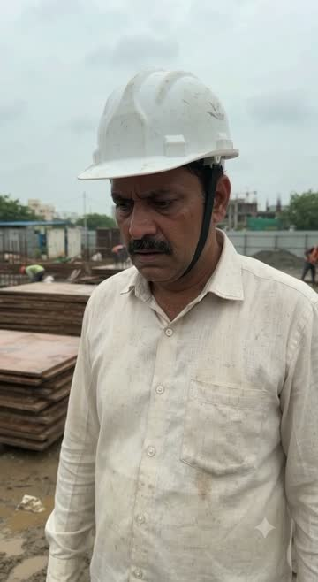
ai-contractor-concern.mp4AI · 7.9sAI/Flow: contractor in helmet walking past brown plywood stacks, concernedai-labour-tired.mp4AI · 7.9sAI/Flow: tired labourer sitting by brown plywood, wiping sweat
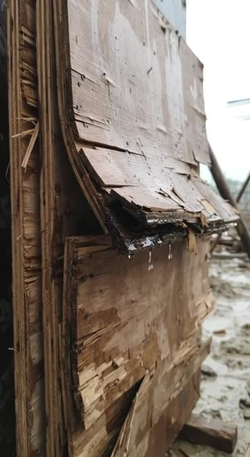
ai-ply-broken-wet.mp4AI · 7.9sAI/Flow: broken water-soaked brown plywood debris (ply problem)ai-ply-waste-pile.mp4AI · 7.9sAI/Flow: pile of broken brown plywood in a half-built brick house
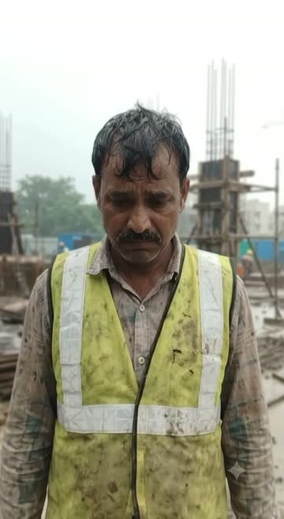
ai-worker-worried.mp4AI · 7.9sAI/Flow: worried worker in vest at ply site (ply problem)
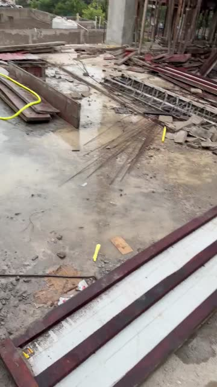
beambox-pp-ground-1.mp4clipREAL: white PP sheets in red beam-box mould on ground
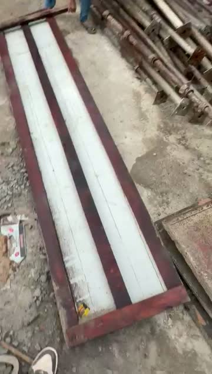
beambox-pp-ground-2.mp4clipREAL: PP beam-box moulds ready for casting
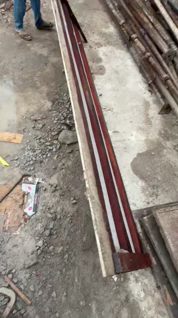
beambox-pp-ground-3.mp4clipREAL: PP beam-box mould, close
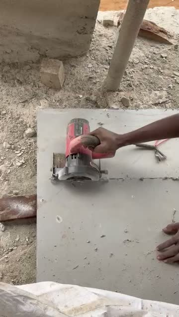
pp-cutting-1.mp4clipREAL: worker cutting grey PP sheet with circular cutter
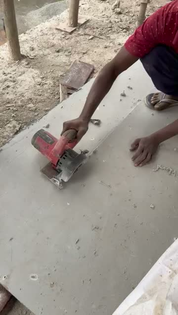
pp-cutting-2.mp4clipREAL: cutting PP sheet to size, cutter
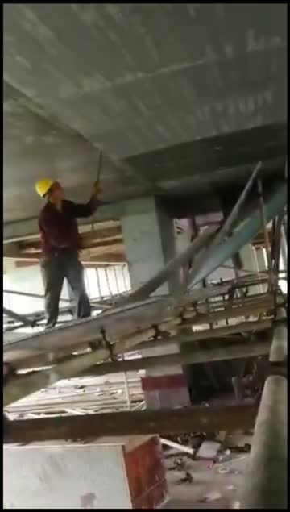
slab-deshutter.mp4clipREAL: de-shuttering formwork from below a slab
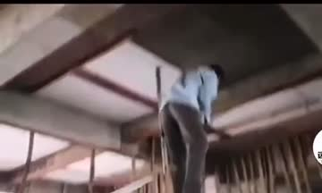
slab-soffit-point-1.mp4clip · 18.2sREAL: worker points up at finished smooth slab underside (Shobhit)
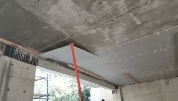
slab-soffit-point-2.mp4clip · 14.2sREAL: red rod pointing at smooth slab ceiling, beam edges (Shobhit)
tg-1107-0838-3.mp4clip · 7.9sREAL: damaged brown ply showing delamination and rot at a construction site
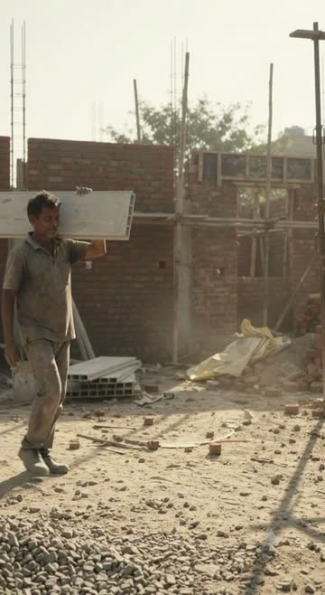
tg-1108-0837-1.mp4clip · 7.9sREAL: labour carrying grey VAJRA sheet at construction site
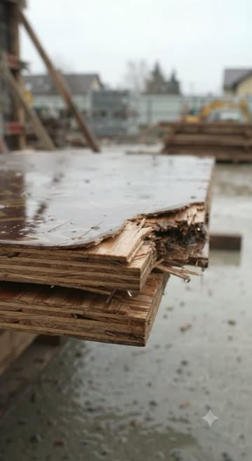
tg-1108-0837-2.mp4clip · 7.9sREAL: damaged wet brown plywood sheets showing internal rotting and splinteringtg-1108-0837-3.mp4clip · 7.9sREAL: contractor couple inspecting a smooth exposed concrete ceiling cast using grey VAJRA
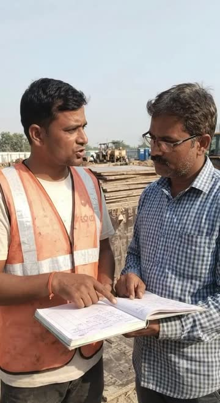
tg-1109-1109-1.mp4clip · 7.9sREAL: contractors checking records and blueprints outdoors at construction sitetg-1109-1109-2.mp4clip · 7.9sREAL: contractor in hard hat talking on phone at a construction site
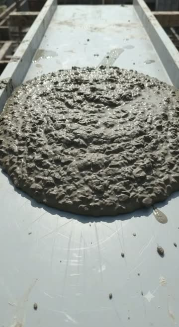
tg-1110-0847-1.mp4clip · 7.9sREAL: grey VAJRA sheet being tested with concrete flowability
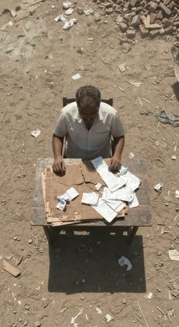
tg-1110-0847-2.mp4clip · 7.9sREAL: contractor sitting at a table with bills and papers
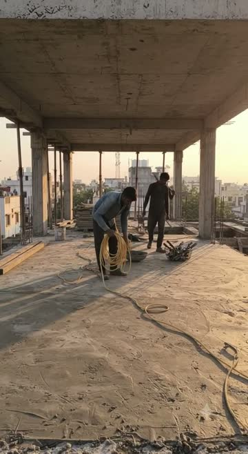
tg-1110-0847-3.mp4clip · 7.9sREAL: labour working on a construction site slabtg-1110-0847-4.mp4AI · 16.1sAI: AI-generated video showing labour handling grey VAJRA PP hollow shuttering sheets withtg-1111-0037-1.mp4AI · 33.9sAI (Flow, long-1111 shots 1-5): slab construction site with labour and props
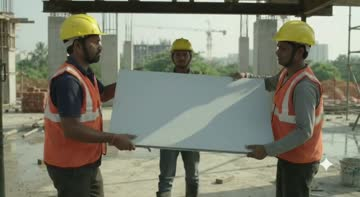
tg-1111-0037-2.mp4AI · 15.7sAI (Flow, long-1111 shots 1-5): labour installing grey VAJRA sheet on site
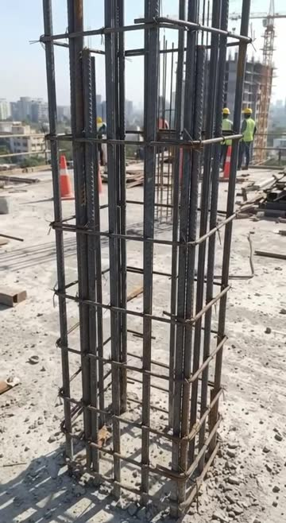
tg-1112-0909-1.mp4clip · 7.9sREAL: column rebar cage on construction site
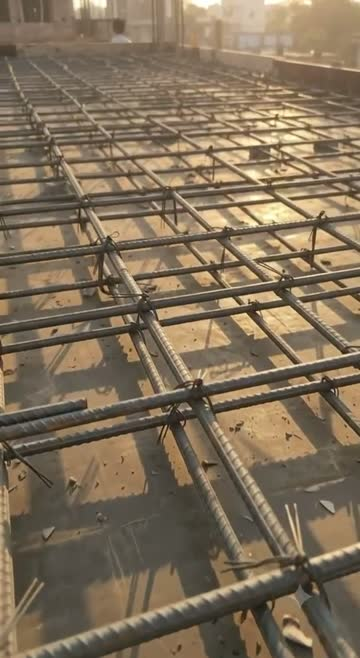
tg-1112-0909-2.mp4clip · 7.9sREAL: grey VAJRA sheet slab reinforcement with rebar meshtg-1113-1200-1.mp4AI · 9.9sAI: labour carrying ply and contractor with clipboard at construction site
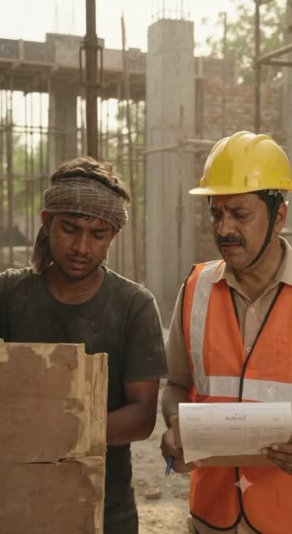
tg-1113-1200-2.mp4AI · 9.9sAI: labour and contractor discussing old brown plywood formwork at a construction site
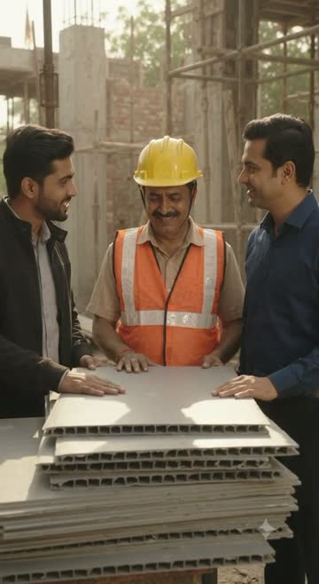
tg-1113-1200-3.mp4AI · 9.9sAI: contractors and worker inspecting grey VAJRA sheet stack at a construction sitetg-1113-2148-1.mp4AI · 7.9sAI: animated cartoon characters representing construction materials like rebar and bamboo tg-1113-2148-2.mp4AI · 7.9sAI: animated wooden plywood sheet and concrete ball characters at construction site
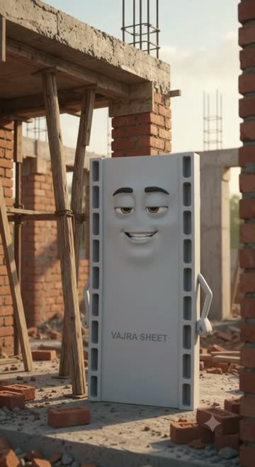
tg-1113-2148-3.mp4AI · 7.9sAI: anthropomorphic grey VAJRA sheet character on a construction sitetg-1113-2148-4.mp4AI · 7.9sAI: AI-generated animated characters made of concrete/VAJRA sheet on a construction site
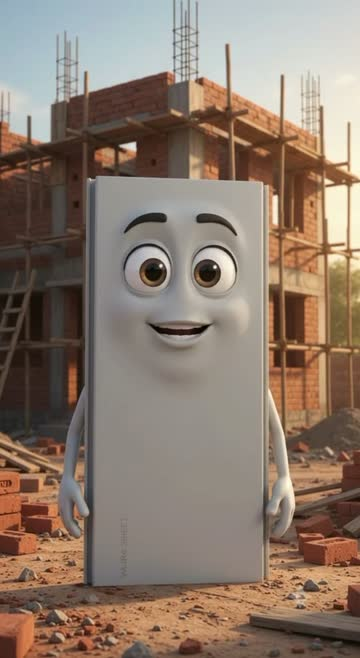
tg-1113-2148-5.mp4AI · 7.9sAI: animated grey VAJRA hollow shuttering sheet character with eyes and arms giving a thumtg-1113-2228-1.mp4AI · 37.9ss6
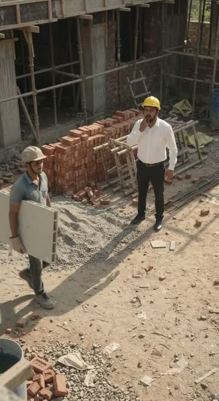
tg-1114-0839-1.mp4AI · 9.9sAI: contractor and labour carrying grey VAJRA sheet on construction site
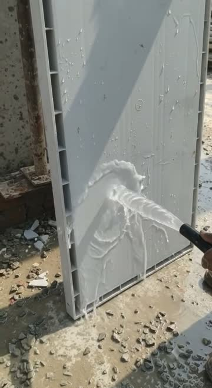
tg-1114-0839-2.mp4clip · 9.9sREAL: Labour washing grey VAJRA sheet with water hose at construction site
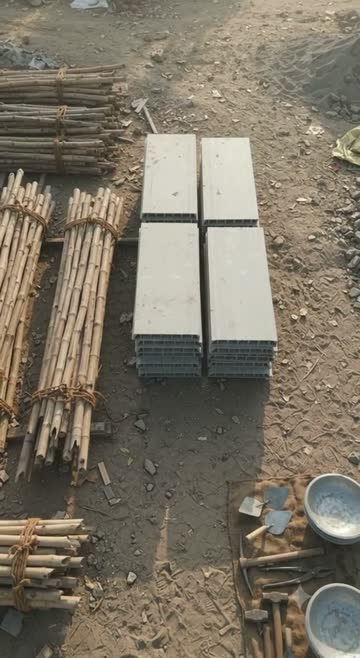
tg-1114-0839-3.mp4clip · 9.9sREAL: grey VAJRA sheet with bamboo bundles and construction tools on dirt ground
Photos (25)
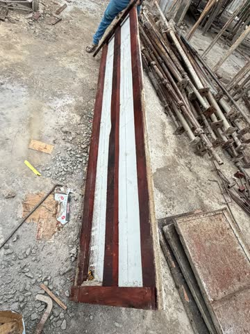
beam-box.jpgphoto
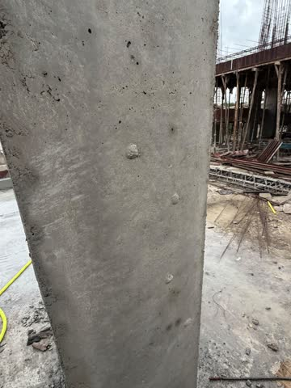
column-smooth2.jpgphoto
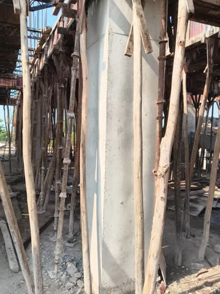
finish-column.jpgphoto
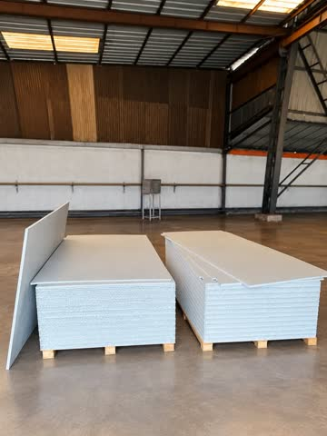
godown.jpgphotoin-20261026-082817.jpgphotoREAL owner photo: finished concrete column on site with props